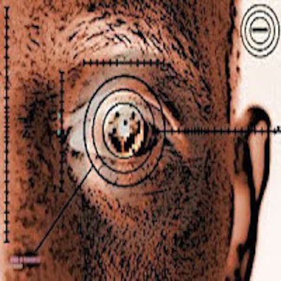
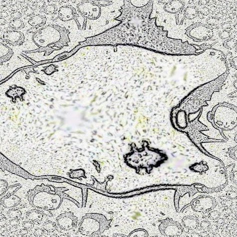
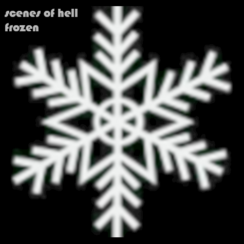

THERE IS A RUMOUR IN MY HOOD : THE FUTURE IS GOING TO BE AWESOME : AND RULERS WILL BE THINGS THAT MEASURE STUFF : ONLY
THIS GUY WAS CONFUSED : BECAUSE ALL THE WOMEN HAD PERFUME : SO HE MADE A RANDOM EXCUSE : AND LEFT
MY EYES ARE RED :
RED LIKE RUBY :
RUBIES ARE SHINNY :
AND HER PUPILS ARE NOT :
IN THE MIDDLE OF HER EYE
SHE IS CROSSEYED :
FROM LOOKING SO HARD AT THE RUBIES
I AM GOING TO ABUSE THE RYTHMMAC-THING THINGGIE :
MY BURGER WAS DEFECTIVE
I AM GOING TO ABUSE THE RYTHMMAC-THING THINGGIE :
MY SODA WAS DEFECTIVE
WE THE PARIAH SMELL I'M SURE : WE ARE AWARE OF NON BELONGING : CORNER TABLES : NAKED BULBS